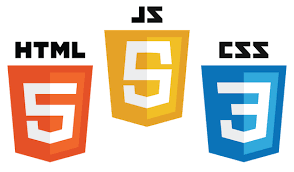

What is Web Development
Web development is the creation of webpages or websites. These webpages or websites are placed on the internet or even an intranet.
This is typically done by a web developer that uses certain tools to structure, design and manipulate content on a webpage or website.
Specifically, web development is the writing of code in multiple programming languages to create an appealing and functional website for a user.
In today's advanced technological world, there are many different tools that a web developer can use to create a website.
Also, there are different forms of web developers themselves. I will discuss these topics below.

What is used to create a website?
While there are many tools available to a developer for creating a website, there are a few basics that are fundamental.
Listed below are the most fundamental of all web development tools. These are the first stepping stones for any aspiring web developer.
- Hypertext Markup Language version 5 (HTML5)
- Cascading Style Sheet version 3 (CSS3)
- JavaScript
HTML5 is used to structure the content of a webpage. CSS3 is used to add style to the content and design the overall feel of the webpage.
JavaScript is used to add interactivity to the webpage by use of prompts, alerts, events, functions and so on.
Together, these three technologies are called the Trifecta of web development. A modern web developer must learn and master
these basic technologies as a minimum to be competitive in the current web development industry.